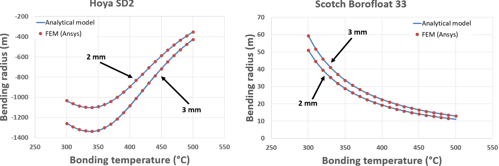

Anodic bonding
Silicon and an alkali-containing glass are heated to a few hundred degrees and a voltage of a few hundred volts is applied, with the crystal positive. Sodium ions in the glass drift away from the interface, leaving an oxygen-rich layer that the electric field pulls against the silicon; the two seal with Si–O–Si bonds, with no organic layer to creep or outgas. The mismatch of thermal expansion between silicon and glass leaves a curvature on cooling, which models predict: tens of metres with Borofloat 33, hundreds of metres or more with Hoya SD2. We will bond silicon to glass, Grade 5 titanium and 316LN steel, and work on lower temperatures to reduce the thermal stress.
Left: sodium ions drift to the cathode and leave a depletion layer, where oxygen ions oxidise the silicon. Right: simulations of anodic bonding, the bending radius of a silicon–glass bilayer after bonding and cooling, for 2 and 3 mm silicon on Hoya SD2 and Borofloat 33 glass; analytical model and FEM agree (LNL).
- Materials
- silicon on glass, titanium, steel
- For
- A1, A2.2, A3